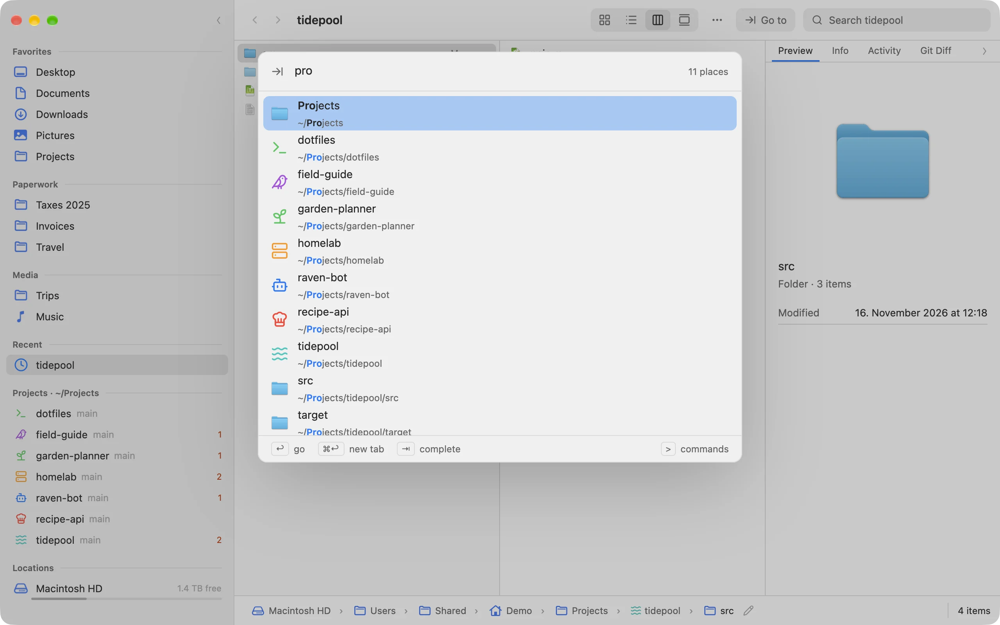
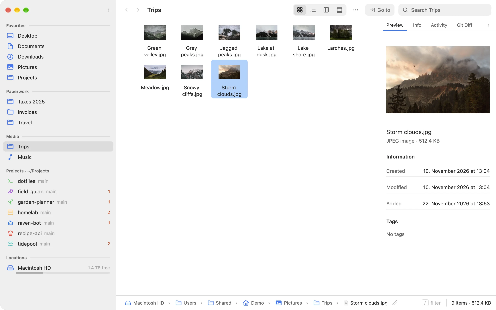
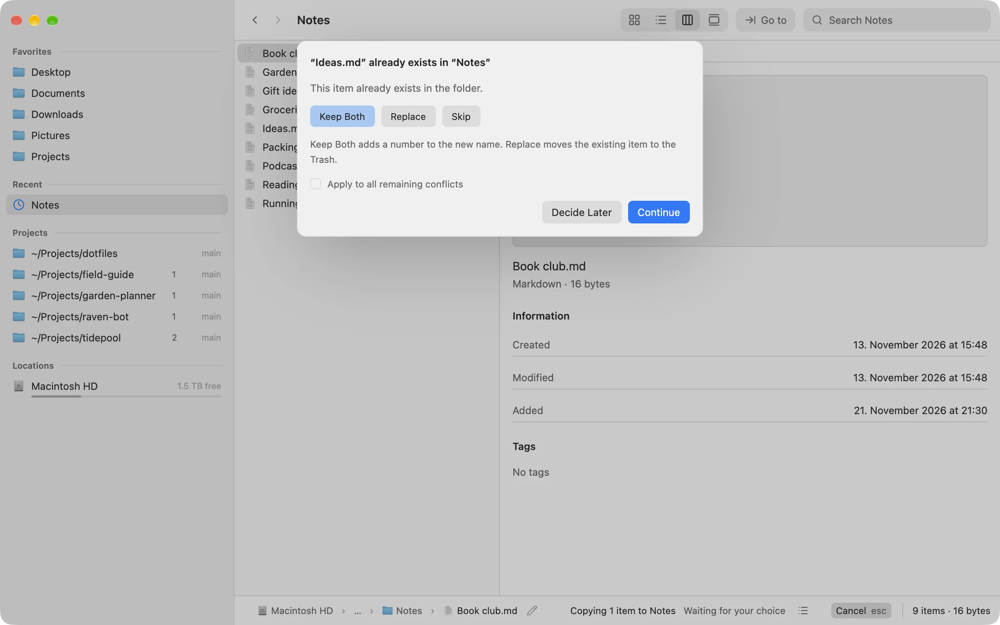
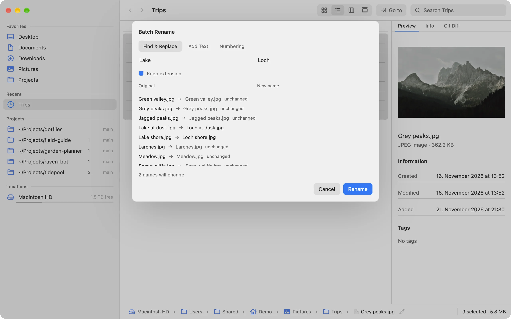
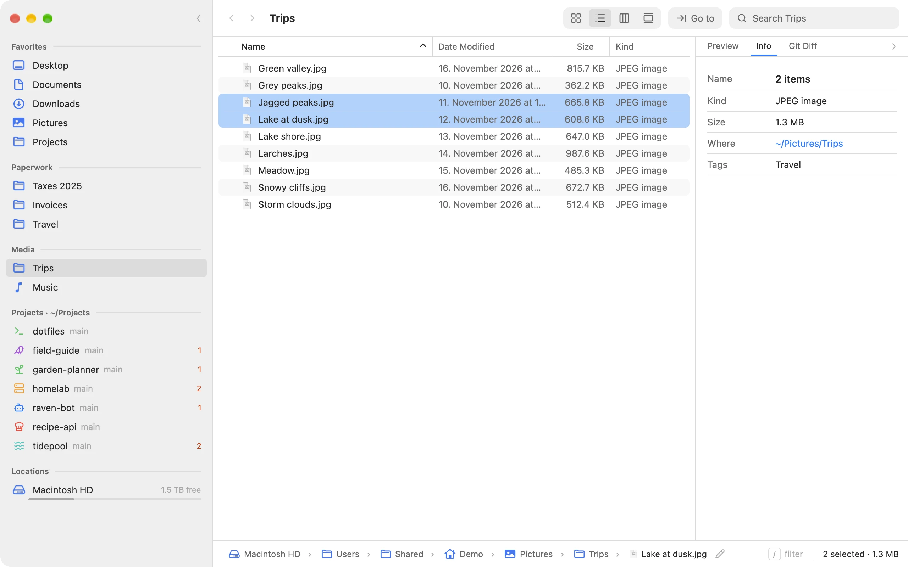
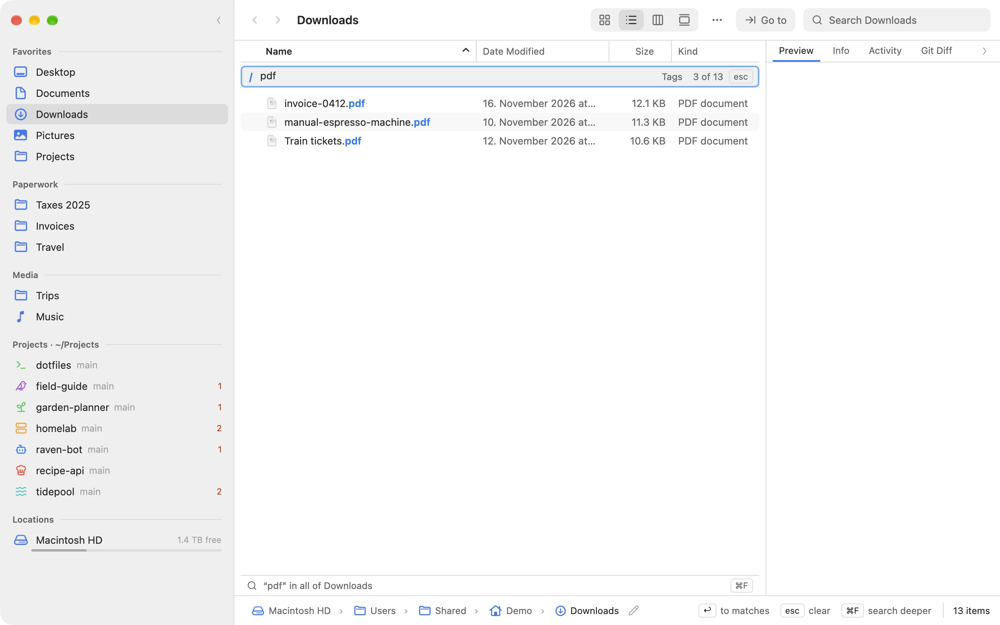
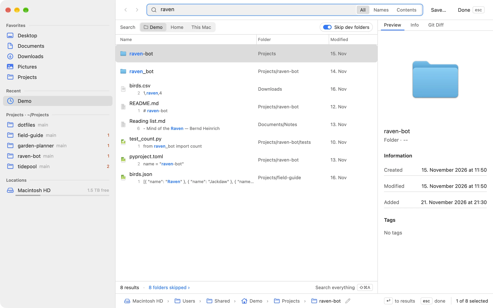
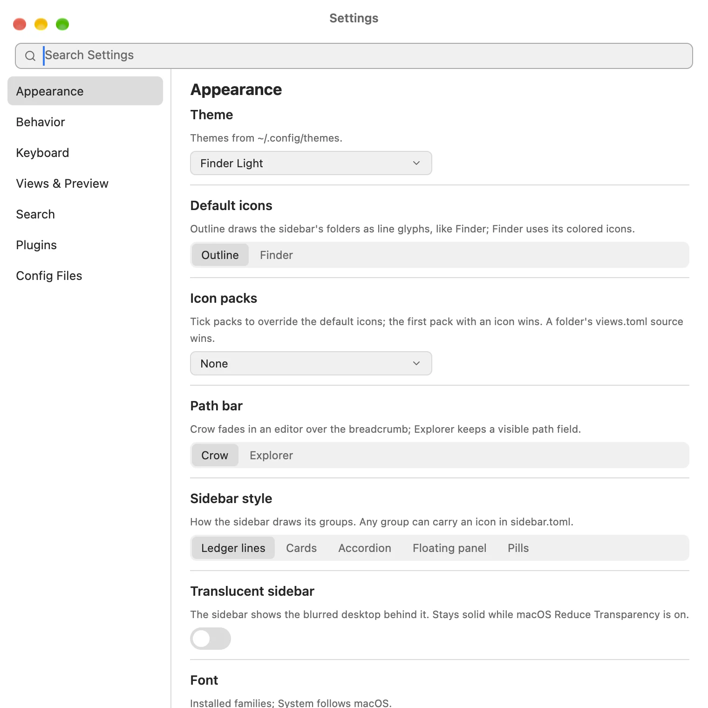
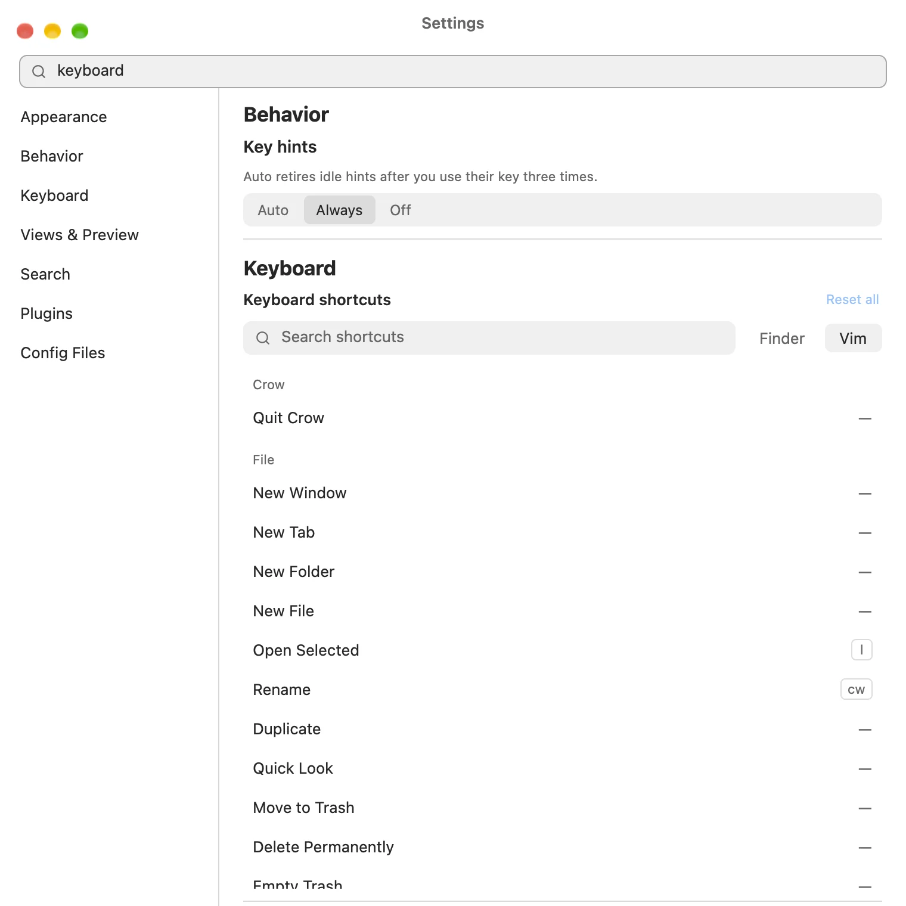
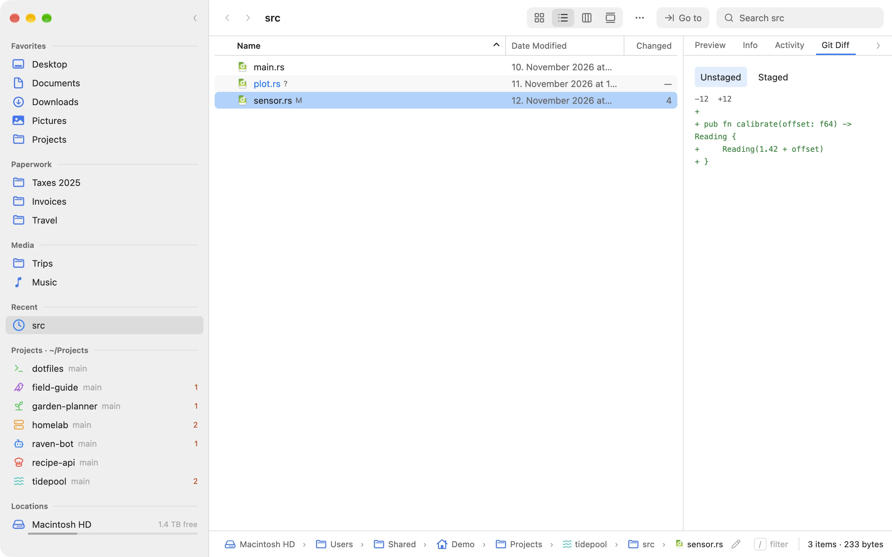

Crow manual
How to use Crow, task by task. Keys are Finder's unless noted; the full list is in keys.md.
Basics
Getting started
Crow needs macOS 14 or later. Download the DMG from Releases or run brew install --cask paraversal/tap/crow. Crow is not signed or notarized yet, so macOS blocks the first open once per version; the install guide has the steps.
On first launch Crow asks "Show tips as you go?" once. Grant the folders you want it to read (Desktop, Documents, Downloads, or Full Disk Access) in System Settings ▸ Privacy & Security; macOS names Crow, not your terminal, when it asks.
The crow command opens folders from a terminal: crow ~/Downloads opens a window there, crow notes.txt opens its folder with the file selected, and crow alone brings Crow forward. 
The window
The left sidebar holds favorites in groups, Recent folders, Projects, Tags, saved searches and Locations. The top band has Back and Forward, the folder name, the view switch (icons, list, columns, gallery), Go to and the search field. The right sidebar shows Preview and Info for the selection. The bottom bar shows the path, hints, progress and counts.
- Every toolbar control has a tooltip with its name and key; a disabled control is the same icon at 40 % opacity.
- ⇧⌘P shows or hides the right sidebar, ⌥⌘P opens it or steps to its next tab (Preview, Info, Git Diff), and ⌘I opens it on Info; ⌃⌘S hides the left sidebar. Both slide (with motion on). Drag a divider to resize; double-click to reset. The left sidebar's width is saved.
- The menu bar (File, Edit, View, Go, Window, Help) lists every command with its Finder key, also while the Vim layer is on, and greys out what the focused view cannot do.
- Sheets (Why This View?, the theme picker, ⌘K, delete and conflict questions) dim the window; a click outside cancels them like esc.
Moving around
Crow uses Finder's keys: arrows (with ⇧ to extend), ⌥↑/⌥↓ for first and last, ⌘↑ for the enclosing folder, ⌘↓ to open, ⌘[ and ⌘] for history, ⌘T and ⌘W for tabs, ⇧⌘. for hidden files, and Space for Quick Look. Typing a name selects it and the bottom bar shows the letters. ⇥ moves focus between the sidebar and the list.
- Go to a folder. ⇧⌘G opens the palette on this folder's path: type a name, ⇥ completes, ↩ goes there or selects a file. A pasted path may be quoted, shell-escaped or a
file://URL. - Edit the path. ⌘L, a click on the bar's empty space or the pencil edits the path in place. Each segment drags the folder it shows. When room runs short the middle folds into "…"; click it for the deepest hidden folder.
- Extend the selection. ⇧⌥↑ and ⇧⌥↓ extend from the cursor to the first or last item, like Finder.
The palette
⌘K opens the palette. Folders are grouped into Recent, Favorites and In <folder>, each with its abbreviated path so two folders called git are told apart. ↩ goes there, ⌘↩ opens it in a new tab, ⇥ appends the folder's path and / so the next letters search inside it. A typed query also matches files in the current folder.
Start with > for commands: rows show the menu, the label, an on/off chip for toggles and their keys. Commands you run are remembered under Recently used (palette_recent_commands = false turns that off). With Show Hidden Files off, dot-named entries still match while search_includes_hidden is on; they are dimmed and ranked last.
Hints and tips
The bottom bar's hints follow focus: the path field (↩ go, ⇥ complete, esc cancel), the filter, the sidebar, search. The idle hint shows / filter and retires after you have used it three times. hints = "always" keeps every hint and "off" hides hints and tips; tips = "off" mutes only the tips. A tip appears once when you do something the slow way, such as scrolling 200+ items instead of typing /.
Views
⌘1 icons, ⌘2 list, ⌘3 columns, ⌘4 gallery. A window shows each folder in that folder's own view, so moving into a folder with its own view switches it; with view_per_folder = false a window keeps the view you give it.
- List. → opens a folder inline (again to go in); ← closes it or goes up. Sort by clicking a header, again to reverse; drag dividers to resize. Right-click the header, or View ▸ Choose List Columns, to pick columns for this folder or as the default. The Name column takes the width the window gives.
- Columns. ← and → move between columns; ← in the leftmost goes up. Clicking empty space closes the columns to the right.
- Icons. Arrows follow the tile grid; drag from empty space for a selection rectangle (⌘ keeps the starting selection, esc restores it). View ▸ Icon Size: Compact, Standard, Large; View ▸ Icon Caption shows a plugin column under each name. Quick Look thumbnails replace icons when they can.
- Gallery. A filename rail beside a large preview. A selected folder previews its children; exactly two selected files compare side by side.
- Why This View? ⌘J shows which layer of
views.toml(default, rule or folder) decided each setting. Use as Defaults and Reset View for This Folder change them.

The right sidebar has Preview and Info tabs (and Git Diff with the Git package). ⌘I opens it on Info and leaves it there; ⇧⌘P hides it. Info shows name, kind, size, where, created, modified and added dates, tags, permissions and owner; a multi-selection shows its count, total size, common kind and shared tags.
Working with files
Selecting, copying and moving
Selection works as in Finder: ⇧ extends, ⌘-click toggles, ⌘A selects all, clicking empty space deselects. ⌘C, ⌘X and ⌘V copy, cut and paste, also to and from Finder; ⌥⌘V moves. Copying or cutting more than 1000 items keeps them in Crow's own clipboard (the status says "Crow only"). ⌥⌘C copies the selected paths, one per line.
- ⌘D duplicates; ⇧⌘N makes a folder; ⌥⌘N a file.
- ⌘⌫ moves to the Trash; ⌥⌘⌫ deletes permanently after asking; ⇧⌘⌫ empties the Trash (home and every mounted volume) after asking.
- Undo. ⌘Z and ⇧⌘Z undo and redo every operation, trash and batch rename included. ⌥⌘L shows Activity, where older steps can be undone.
- Nothing is overwritten. A name clash asks first; Replace moves the old item to the Trash.
The copy queue
Copies and moves run as jobs. Conflicts are shown before the copy starts, and you can decide later. While one runs, a 2 px accent line along the bar's top edge and "Copying … · n %" with Cancel esc replace the hints. Quitting or closing the last window during a job asks first: esc keeps it running, ↩ stops it cleanly (finished items stay; the item in progress is never left half done).

Renaming
↩ renames the selected item (with enter = "open" it opens instead; F2 always renames). Select two or more items and press F2 to rename them together: one sheet applies literal find and replace, adds text before or after the name, or numbers the selection in display order, with a live old → new preview and one Undo for the whole batch. Extensions are kept by default, and a swap or other cycle is staged safely.

Drag and drop
Drag within Crow or between Crow and Finder or other apps; ⌥ copies. Dropping works on folder rows, search results, sidebar folders, path segments and real folders found by search.
Holding still over a folder for a moment springs it open (its highlight blinks twice first). Release to drop there, or leave to restore the folder, selection and scroll you started from. Holding over the Back button steps back out of opened folders, then through history. Afterwards Back returns to the starting folder.
In the sidebar, drag favorites to reorder them (or ⌥⌘↑/⌥⌘↓), drop files on a row to move or copy them there, and drop folders between favorites (a line shows where) or on a group's title to add them. ⌃⌘T adds the selected folder.
The Shelf
Turn on [shelf] show = true in sidebar.toml for a Shelf at the bottom of the sidebar. Drag files onto it, or use Add to Shelf, carry them to another folder, then Move Shelf Here or Copy Shelf Here (palette and File menu). It holds references, is saved in the state folder and shows only while it holds files or a drag is in flight.
Quick Look, Info and the terminal
Space opens Quick Look. Preview shows the selection in the right sidebar, at the hit line for search results; text is syntax-highlighted. Cloud placeholders keep their download badge.
Open Terminal Here (context menu, File menu, palette) opens the folder in the app set by terminal in settings.toml (a name like "iTerm" or a path). A folder opens itself; a file opens its parent; a multi-selection has no single "here", so the line is disabled. Right-click or Ctrl-click opens a native menu with the same names and keys as the menu bar.

Finding things
Filtering
Type / to filter the focused folder as you type. The field opens as the first row of the column (or under the list header) with the query, a Tags control and "n of N"; matching letters are highlighted. esc clears it, arrows move within the matches, ↩ moves focus into them, and ⌘↓ opens the selected one. ⌘F carries the text into a search of that folder.
The Tags control opens a multi-select sheet; every selected tag must be present. Edit ▸ Filter by Tag… reaches it from anywhere in the list.

Search
⌘F searches names and contents in the current folder (in columns, the focused column; press → first to search the folder previewed beside it). The field moves into the top band, where All / Names / Contents choose what to match (⇧⌘M cycles them); Names reads no file contents. search_match sets the mode each new search starts in. Drag the dividers between Name, Folder and Modified to resize the columns; the next search opens with the same widths.
- Scope. The scope bar switches between the folder, Home and This Mac (Spotlight, names only).
- Skipped folders. The footer counts results and files and lists every skipped folder with the rule that skipped it. The
devset (node_modules,targetbesideCargo.toml,.git, …) is on by default; Find Everything (⇧⌘A) turns every set off. Hidden files are searched, dimmed, whilesearch_includes_hiddenis on. - Results. Name matches come first with their letters highlighted; a content hit shows its line number and line under the name. The right sidebar previews the selected result at the hit line. ↩ opens, ⌘R reveals, Space Quick Looks, and the usual copy, cut and trash keys work. ⇥ goes field → results → sidebar; esc closes.

Saved searches and tags
File ▸ Save Search… writes the open search to saved-queries.toml. A saved search is a live destination in the sidebar with its own result list; ⌘F inside one edits a temporary query without changing the record. Its context menu edits or removes it, and Settings ▸ Search lists them all, with optional kind, age and tag predicates.
The sidebar's Tags section shows Finder tags discovered from Spotlight's index plus pinned_tags from sidebar.toml. A tag row opens every indexed item carrying it.
Making it yours
Settings
⌘, opens one resizable window with Appearance, Behavior, Keyboard, Views & Preview, Search, Plugins and Config Files. Search Settings (⌘F) finds controls by name, by plain words ("Vim", "hidden", "icon pack") or by TOML key. Every control edits the same file the text editor would; the files stay authoritative and the window follows edits made elsewhere. A broken file adds a row naming it and the line, with an Open button.

Themes and icon packs
Ten themes ship with Crow, and "System" follows macOS. View ▸ Theme… (⌥⌘T) previews each as you move through the list; ⌘↩ applies it to every app that reads ~/.config/themes. Any Base24 scheme dropped into ~/.config/themes/schemes/ appears at once. See themes.md.
Icon packs replace Finder's icons with SVG (tinted) or PNG (full colour) files; pick several in Settings ▸ Appearance ▸ Icon pack to layer them. A complete Lucide pack is in the repository to copy.

The sidebar
Groups of favorites live in sidebar.toml (drag folders in, or add them by hand). A group takes an icon (short text or emoji); favorites take name, icon, color and a Vim mark key. Same-named folders show their parent. Locations show free space and a bar that warns near full.
sidebar_style in settings.toml picks the look: ledger (default), cards, accordion, floating-panel or pills. ↩ on a group heading collapses it; ⌥↑/⌥↓ jump between groups; ⌘⌫ removes a favorite or forgets a recent folder; ⌘E ejects a disk. 
The Vim layer and your own keys
keymap = "vim" adds j/k, h/l, gg/G, yy/dd/p, u and ⌃R, cw to rename, - to go up, m x to mark the folder as favorite x and 'x to jump there. Letters no longer select by name in this layer. The menus keep the Finder keys.
Settings ▸ Keyboard lists every command with its shortcut for either layer. Click a row (or ↩), type the new keys; a Vim sequence ends with ↩ or a one-second pause. esc cancels, Backspace while typing removes the shortcut, and ⌫ on a row restores the default. A key another command uses asks Replace, Keep both or Cancel; keys macOS owns are refused with the reason. The same edits can be made in keys.toml. Every key is in keys.md.

Motion and sound
motion = "auto" uses Full unless macOS Reduce Motion is on, then Low. "off" changes state in one frame; "low" fades only; "full" also moves: a trashed row's icon becomes a trash and swallows the name, a move pulses its target, and the selection fill glides between rows. sound is "crow" (Finder's trash sounds plus soft ticks), "finder" or "off". Details are in motion.md.
Config files
Seven TOML files in ~/.config/crow/, each written on first launch with every option documented. Edits apply immediately and Crow keeps your comments when it writes. configuration.md shows each file as shipped.
Extending
Git and Projects
The bundled Git package is optional and read-only: approve it once in Settings ▸ Plugins. Changed files show badges and folders show the highest-priority badge beneath them; ignored files are dimmed. The status bar shows the branch, ahead/behind and changed count; Info shows Git details; the Git Diff tab shows staged and unstaged text changes for the selected file.
For the Lines column, add "git.lines-changed" to columns in views.toml and press ⌘2. Pin a worktree root to follow it, and select a badge to open Review Git Changes, where Pinned Repositories shows all pins at once.
Projects lists the repositories under [projects] roots in sidebar.toml, with branch and changed count. Use the palette's Add Current Folder as Project Root.
Plugins and the command line
Plugins are Rhai packages that add commands, sidebar sections, preview providers and columns, each with an explicit grant. A running plugin's commands appear in File ▸ Plugins and the palette. See plugins.md.
crow is installed by ./scripts/bundle.sh --install (and by the Homebrew cask). It is a small script that runs open -a /Applications/Crow.app; set CROW_APP if you move Crow.
Appendix
Troubleshooting
- macOS says Crow can't be verified. See the install guide: Privacy & Security ▸ Open Anyway.
- A folder looks empty or asks for permission. Grant Crow the folder (or Full Disk Access) in System Settings ▸ Privacy & Security. Each new version is a new app to macOS, so permissions must be granted again after updating.
- A setting has no effect. A broken config file shows an error pill with its name and line; fix it and the change applies at once. Deleting a line restores its default.
- Logs are in
~/Library/Logs/Crow/crow.log. - Reset. Delete
~/.config/crow/(settings) and/or~/.local/state/crow/(recent folders, usage, Shelf).
Where Crow keeps its files
| Path | Holds |
|---|---|
~/.config/crow/ | settings, views, sidebar, exclude, saved queries, keys, plugin grants, icon packs, plugins |
~/.local/state/crow/ | recent folders, palette history, key-use counts, tips seen, the Shelf |
~/Library/Logs/Crow/ | the log |
~/Library/Caches/crow/ | caches |
~/.config/themes/ | the optional shared theme index |